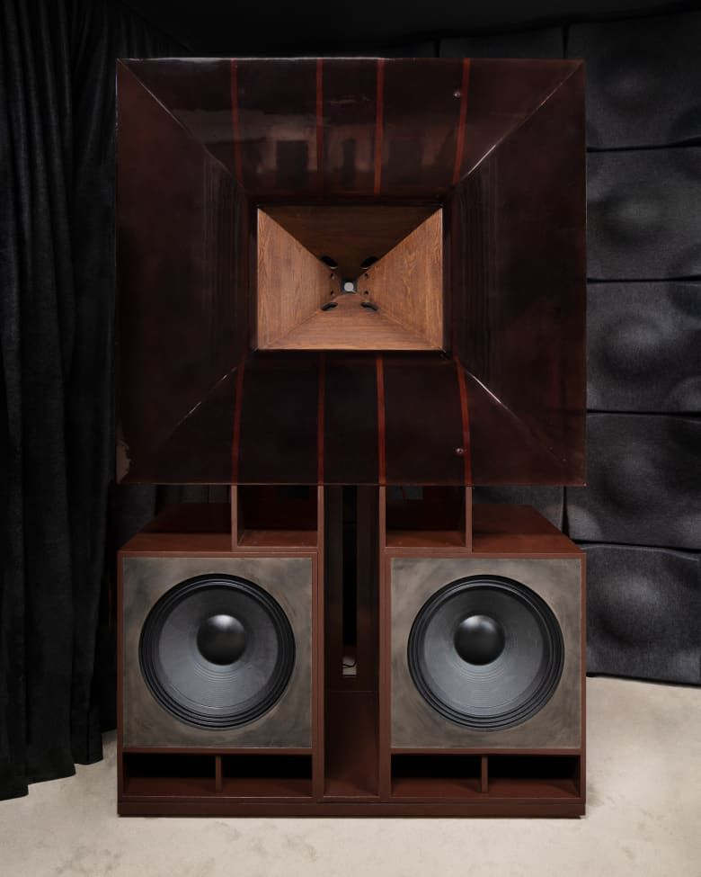
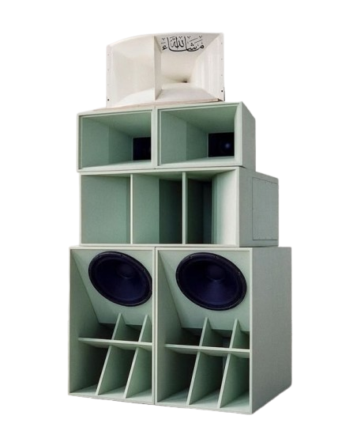
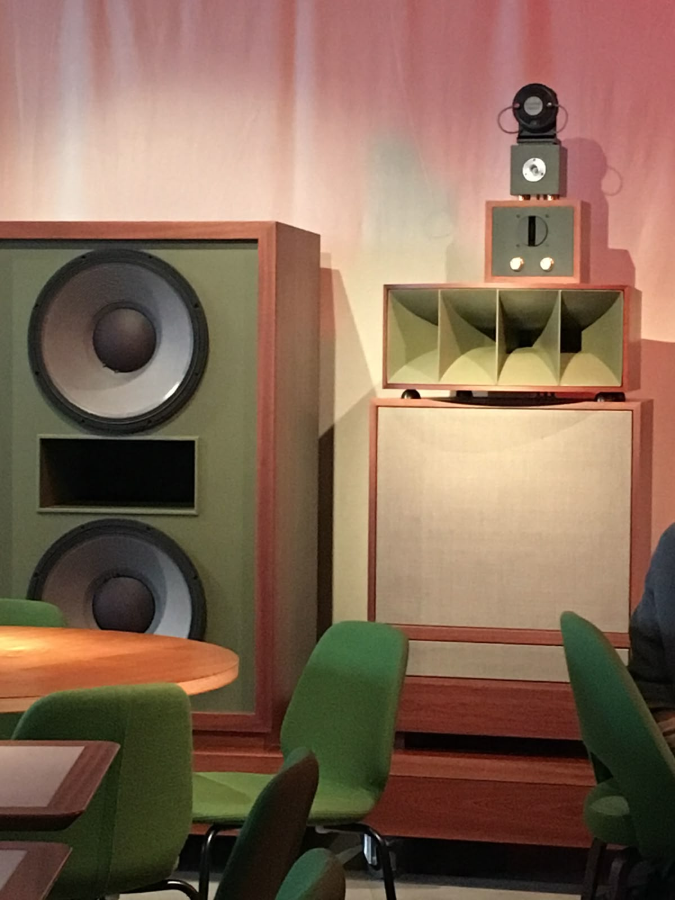
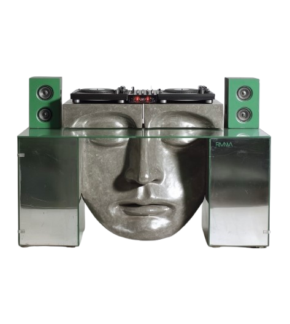
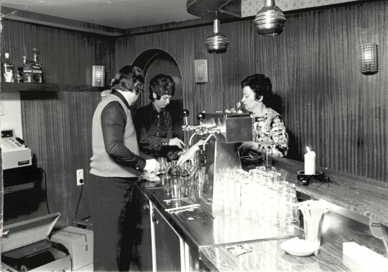
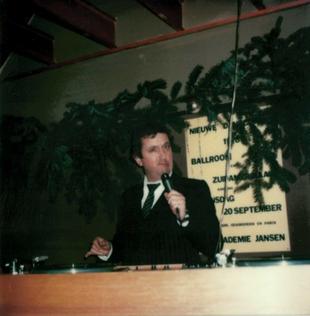
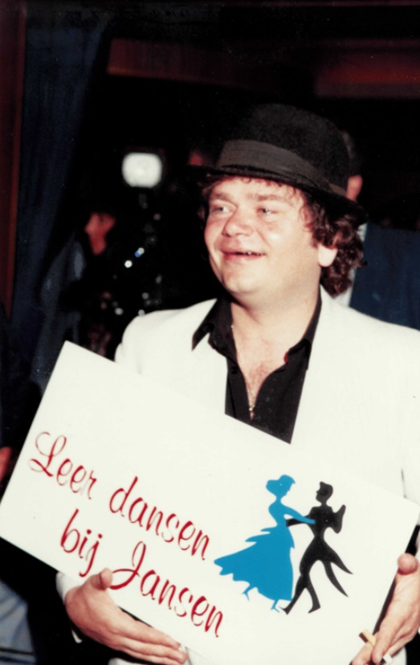
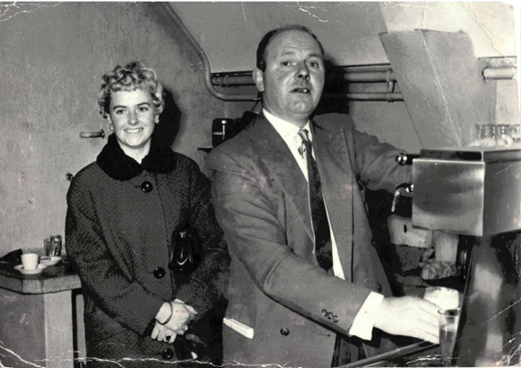

Gemaakt in Rotterdam, voor meer dan alleen luisteren
Jansen Audio
Ontworpen met een passie voor geluid en design, speciaal gemaakt om jou en je vrienden aan het dansen te krijgen.
informeer nu



Ons verhaal



